Auspicious Flora
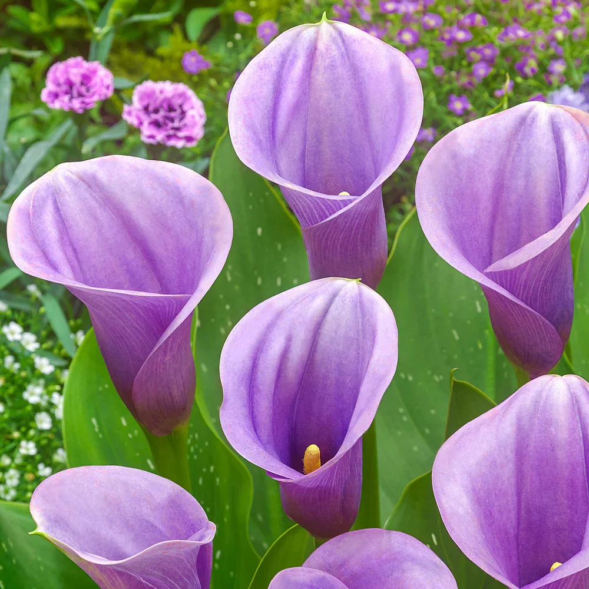
The Rat
The lily, with its elegant beauty and associations with renewal, mirrors the Rat's resourceful and creative nature. Gift lilies to a Rat-born friend to celebrate their clever and captivating spirit.
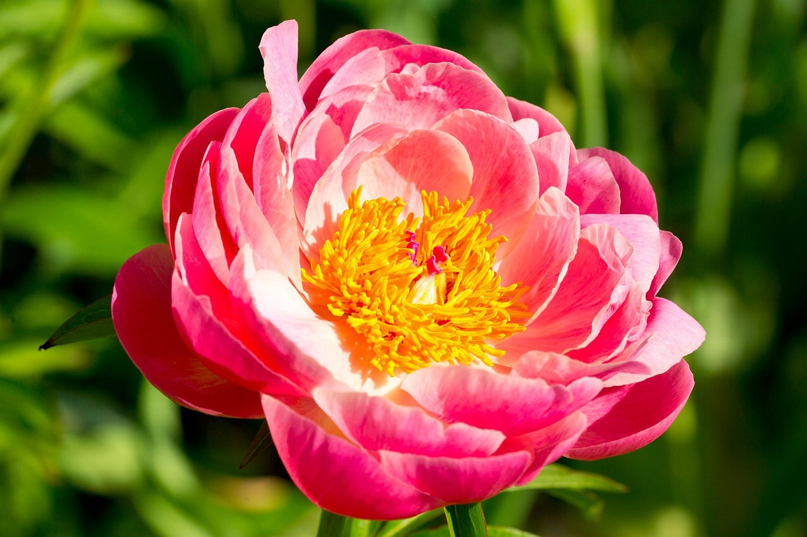
The Ox
The peony, a symbol of wealth, honor, and prosperity, reflects the Ox's steady and reliable character. Its lush, full blooms are perfect for honoring the Ox's unwavering dedication to success and family.
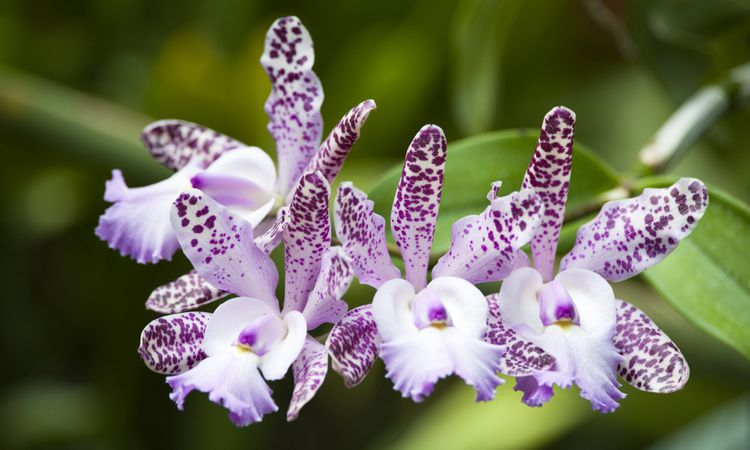
The Tiger
Orchids symbolize strength, beauty, and bravery—qualities Tigers embody effortlessly. A bouquet of orchids can inspire Tigers to pursue their ambitions fearlessly.
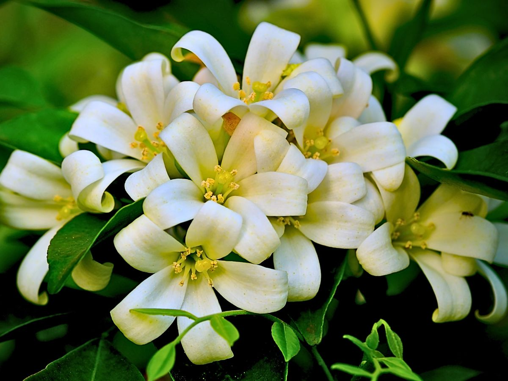
The Rabbit
Jasmine, with its delicate blossoms and enchanting fragrance, represents the Rabbit's calm demeanor and love for beauty. Jasmine flowers are ideal for promoting peace and serenity in their lives.

The Dragon
The lotus, which rises from muddy waters to bloom beautifully, reflects the Dragon's transformative and resilient spirit. Dragons thrive on challenges, just like the lotus thrives in difficult conditions.
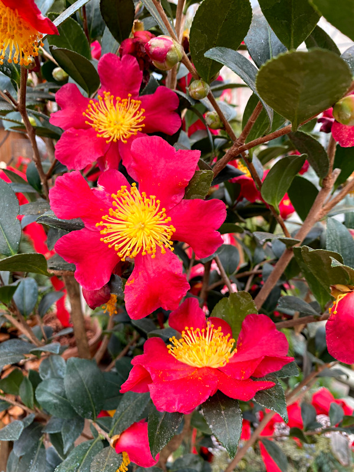
The Snake
The camellia, symbolizing refinement and excellence, perfectly suits the Snake's mysterious and introspective nature. Its delicate yet bold blooms highlight the Snake's allure and depth.
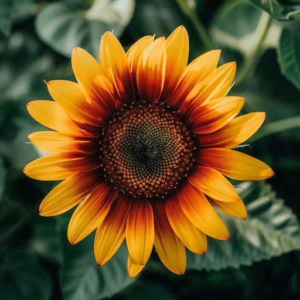
The Horse
The sunflower, with its vibrant and sunny disposition, reflects the Horse's optimism and adventurous personality. Sunflowers inspire Horses to embrace their boundless enthusiasm for life.
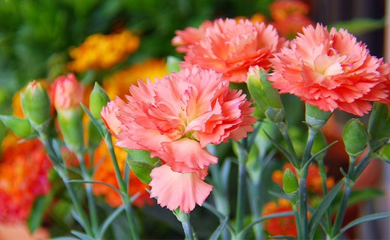
The Goat
The carnation, known for its soft beauty and associations with love and devotion, mirrors the Goat's nurturing and artistic spirit. Carnations bring comfort and joy to Goats, who value emotional connections.
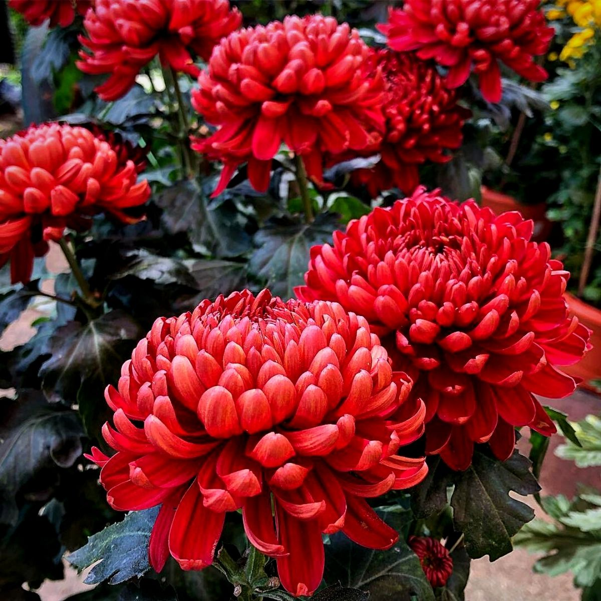
The Monkey
The Chrysanthemum, a symbol of joy, longevity, and intelligence, perfectly represents the Monkey's playful and dynamic personality. Its vibrant colors match the Monkey's lively and energetic spirit.
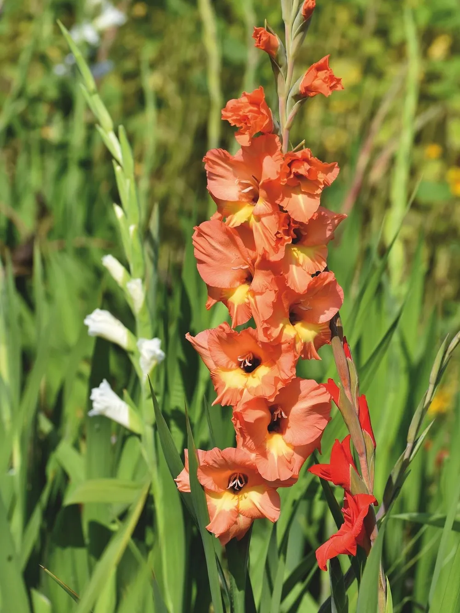
The Rooster
The gladiolus, symbolizing integrity and strength, resonates with the Rooster's disciplined and determined nature. These tall, striking flowers reflect the Rooster's pride and unwavering focus.
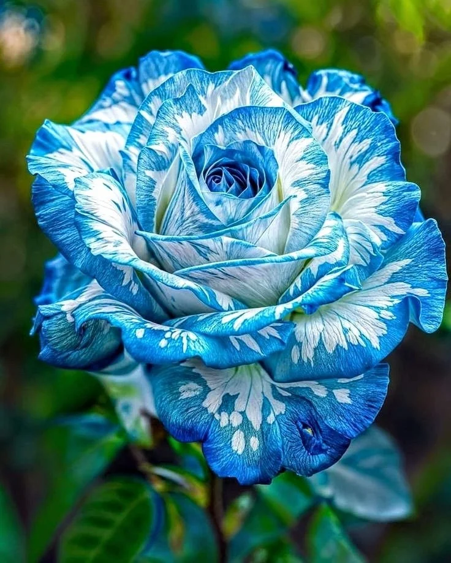
The Dog
Roses symbolize love, loyalty, and courage—all traits that define the Dog's faithful and kind-hearted personality. A bouquet of roses is a perfect tribute to their steadfast devotion.
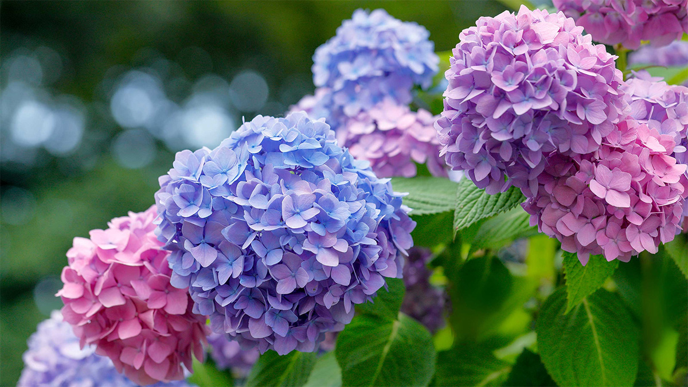
The Pig
The hydrangea, with its abundant clusters of blossoms, represents gratitude, prosperity, and heartfelt emotions. This flower aligns beautifully with the Pig's kind and giving nature, making it a perfect match.